Guide de première utilisation
Le Chef de chantier
Ce qu'il faut faire, et dans quel ordre
| Application | Nourane Génie Civil, gestion des coûts de construction |
| Pour aller plus loin | Manuel du Chef de chantier |
| Date | Octobre 2026 |
Le Chef de chantier
Ce qu'il faut faire, et dans quel ordre
| Application | Nourane Génie Civil, gestion des coûts de construction |
| Pour aller plus loin | Manuel du Chef de chantier |
| Date | Octobre 2026 |
Le chef de chantier saisit ce qui se passe sur le chantier : les dépenses et l'avancement des lots de travaux. Tout le reste est préparé par l'ingénieure : votre compte, le projet, son budget, le catalogue des articles. Tant que le projet n'est pas « En cours » et que vous n'en êtes pas le chef, vous ne pouvez rien y saisir.
Vos saisies attendent ensuite la validation de l'ingénieure. Validées, elles comptent dans le budget et le client les voit ; rejetées, elles reviennent vers vous avec un motif.
Le schéma de la page suivante montre ces dépendances. Une flèche signifie « doit exister avant ». Les cases en pointillés sont faites par d'autres que vous.

| Pour… | Il faut d'abord… | Où |
|---|---|---|
| Se connecter | Votre compte, créé par l'ingénieure | Connexion |
| Voir un chantier | Être désigné chef de ce chantier par l'ingénieure | Projets |
| Saisir une dépense ou un relevé | Un chantier « En cours » ou « Suspendu » (pas terminé) | + Dépense, Avancement |
| Choisir un article | L'article dans le catalogue ; sinon ajoutez-le, ou saisissez un libellé libre | Articles et fournisseurs |
| Joindre une photo | Le stockage des photos configuré ; une photo ou un PDF de 4 Mo au plus | Formulaires |
| Corriger ou retirer une saisie | Qu'elle soit la vôtre et encore en attente | Fiche de la dépense, Dépenses |
| Faire baisser l'avancement d'un lot | Un commentaire qui explique pourquoi | Avancement |